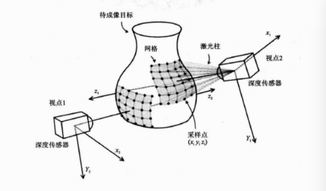
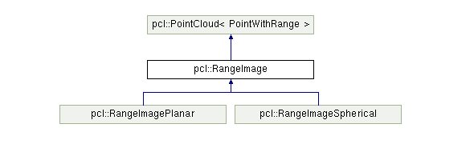
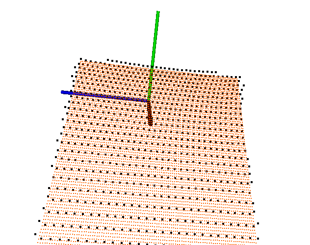
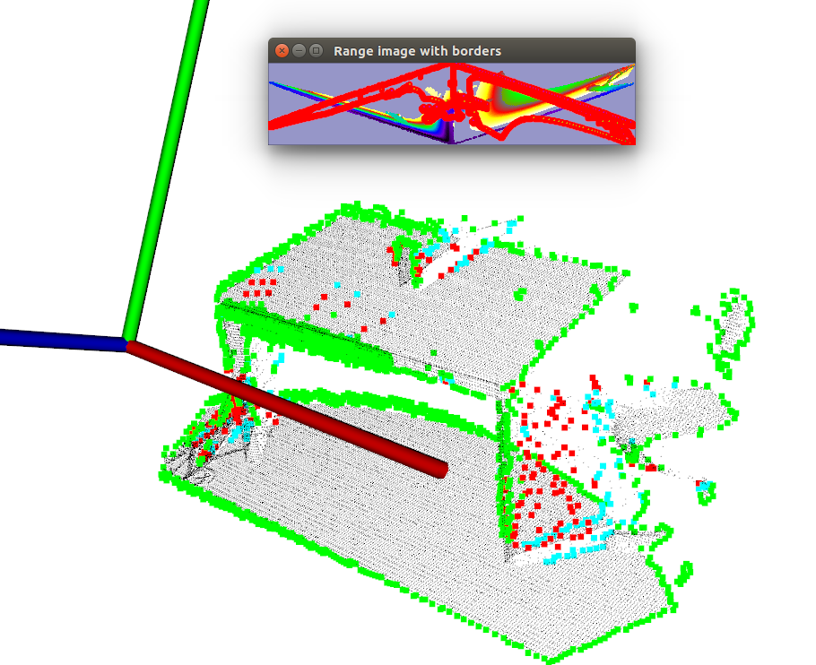

02-深度图¶
目前深度图像的获取方法有激光雷达深度成像法，计算机立体视觉成像，坐标测量机法，莫尔条纹法，结构光法等等，针对深度图像的研究重点主要集中在以下几个方面，
- 深度图像的分割技术
- 深度图像的边缘检测技术
- 基于不同视点的多幅深度图像的配准技术
- 基于深度数据的三维重建技术
- 基于三维深度图像的三维目标识别技术
- 深度图像的多分辨率建模和几何压缩技术等等
在PCL 中深度图像与点云最主要的区别在于其近邻的检索方式的不同，并且可以互相转换。
深度图像（Depth Images）也被称为距离影像（Range Image），是指将从图像采集器到场景中各点的距离值作为像素值的图像，它直接反应了景物可见表面的几何形状，利用它可以很方便的解决3D目标描述中的许多问题，深度图像经过点云变换可以计算为点云数据，有规则及有必要信息的点云数据可以反算为深度图像数据。
从数学模型上看，深度图像可以看做是标量函数j:I^{2}\rightarrow R在集合K上的离散采样，得到r_{i}=j\left( u_{i}\right)，其中u_i \in I^2为二维网格（矩阵）的索引，r_i \in R, i = {1,...,k}，以下为从不同视角获得的深度图像过程示意：

从点云创建深度图¶
pcl::RangeImage
RangeImage类继承于PointCloud，主要功能是实现一个特定视点得到一个三维场景的深度图像。其继承关系如下：

函数及参数说明
函数：通过pointCloud点云创建深度图
createFromPointCloud(pointCloud, angularResolution, maxAngleWidth, maxAngleHeight,
sensorPose, coordinate_frame, noiseLevel, minRange, borderSize)
参数
- pointCloud：被检测点云
- angularResolution=1：邻近的像素点所对应的每个光束之间相差 1°
- maxAngleWidth=360：进行模拟的距离传感器对周围的环境拥有一个完整的360°视角，无论任何数据集都推荐使用此设置，因为最终获取的深度图像将被裁剪到有空间物体存在的区域范围
- maxAngleHeight=180： 当传感器后面没有可以观测的点时，设置一个水平视角为180°的激光扫描仪即可，因为需要观察距离传感器前面就可以了。
- sensorPose： 定义了模拟深度图像获取传感器的6DOF（6自由度）位置，其原始值为横滚角roll、俯仰角 pitch、偏航角 yaw 都为 0
- coordinate_frame： 设置为CAMERA_FRAME说明系统的X轴是向右的、Y轴是向下的、Z轴是向前的，另外参数值是LASER_FRAME，其X轴向前、Y轴向左、Z轴向上
- noiseLevel=0： 是指使用一个归一化的 Z缓存区来创建深度图像，如果想让邻近点集都落在同一个像素单元，可以设置一个较高的值，例如 noiseLevel = 0.05 可以理解为深度距离值是通过查询点半径为 5cm 的圆内包含的点用来平均计算而得到的 。
- minRange=0：如果设置>0则所有模拟器所在位置半径 minRange 内的邻近点都将被忽略，即为盲区。
- borderSize=1：如果设置>0 ,在裁剪图像时，将在图像周围留下当前视点不可见点的边界 。
代码实现¶
range_image.cpp
#include <pcl/range_image/range_image.h>
#include <pcl/io/pcd_io.h>
#include <pcl/visualization/pcl_visualizer.h>
#include <pcl/visualization/range_image_visualizer.h>
int main(int argc, char **argv) {
pcl::PointCloud<pcl::PointXYZ>::Ptr pointCloudPtr(new pcl::PointCloud<pcl::PointXYZ>);
pcl::PointCloud<pcl::PointXYZ>& pointCloud = *pointCloudPtr;
// 创建一个矩形形状的点云
// Generate the data
for (float y = -0.5f; y <= 0.5f; y += 0.01f) {
for (float z = -0.5f; z <= 0.5f; z += 0.01f) {
pcl::PointXYZ point;
point.x = 2.0f - y;
point.y = y;
point.z = z;
pointCloud.points.push_back(point);
}
}
pointCloud.width = (uint32_t) pointCloud.points.size();
pointCloud.height = 1;
// pcl::io::loadPCDFile("./data/bunny.pcd", pointCloud);
// pcl::io::loadPCDFile("./data/table_scene_lms400_downsampled.pcd", pointCloud);
// We now want to create a range image from the above point cloud, with a 1deg angular resolution
// 根据之前得到的点云图，通过1deg的分辨率生成深度图。
float angularResolution = (float) (1.0f * (M_PI / 180.0f));// 弧度1°
float maxAngleWidth = (float) (360.0f * (M_PI / 180.0f)); // 弧度360°
float maxAngleHeight = (float) (180.0f * (M_PI / 180.0f)); // 弧度180°
Eigen::Affine3f sensorPose = (Eigen::Affine3f) Eigen::Translation3f(0.0f, 0.0f, 0.0f); // 采集位置
pcl::RangeImage::CoordinateFrame coordinate_frame = pcl::RangeImage::CAMERA_FRAME; // 相机坐标系
float noiseLevel = 0.00;
float minRange = 0.0f;
int borderSize = 1;
boost::shared_ptr<pcl::RangeImage> range_image_ptr(new pcl::RangeImage);
pcl::RangeImage& rangeImage = *range_image_ptr;
rangeImage.createFromPointCloud(pointCloud, angularResolution, maxAngleWidth, maxAngleHeight,
sensorPose, coordinate_frame, noiseLevel, minRange, borderSize);
std::cout << rangeImage << "\n";
// --------------------------------------------
// -----Open 3D viewer and add point cloud-----
// --------------------------------------------
pcl::visualization::PCLVisualizer viewer ("3D Viewer");
viewer.setBackgroundColor (1, 1, 1);
// 添加深度图点云
pcl::visualization::PointCloudColorHandlerCustom<pcl::PointWithRange> range_image_color_handler (range_image_ptr, 0, 0, 0);
viewer.addPointCloud (range_image_ptr, range_image_color_handler, "range image");
viewer.setPointCloudRenderingProperties (pcl::visualization::PCL_VISUALIZER_POINT_SIZE, 4, "range image");
// 添加原始点云
pcl::visualization::PointCloudColorHandlerCustom<pcl::PointXYZ> org_image_color_handler (pointCloudPtr, 255, 100, 0);
viewer.addPointCloud (pointCloudPtr, org_image_color_handler, "orginal image");
viewer.setPointCloudRenderingProperties (pcl::visualization::PCL_VISUALIZER_POINT_SIZE, 2, "orginal image");
viewer.initCameraParameters ();
viewer.addCoordinateSystem(1.0);
//--------------------
// -----Main loop-----
//--------------------
while (!viewer.wasStopped ())
{
viewer.spinOnce ();
pcl_sleep (0.01);
}
return (0);
}
输出结果¶
header:
seq: 0 stamp: 0 frame_id:
points[]: 1008
width: 48
height: 21
sensor_origin_: 0 0 0
sensor_orientation_: 0 0 0 1
is_dense: 0
angular resolution: 1deg/pixel in x and 1deg/pixel in y.
实现效果¶


从深度图中提取边界¶
我们对三种不同类型的点感兴趣：
- obstacle border：对象边界（属于对象的最外面的可见点）
- shadow border：阴影边界（在背景中与遮挡物相邻的点）
- Veil points：面纱点集（对象边界边界与阴影边界之间的内插点）
以下是一个典型的激光雷达获得的3D数据对应的点云图：

代码实现¶
这里有个注意事项：
要提取边界信息，重要的是要区分未观察到的图像点和应该观察到但超出传感器范围的点。后者通常用来标记边界，而未观察到的点通常不标记边界。因此，最好可以提供这些测量信息。如果无法提供超出这些应该观察到的传感器范围的点，则可以使用setUnseenToMaxRange函数，将那些点设置为最大深度（本例添加-m参数）。
range_image_border.cpp
/* \author Bastian Steder */
#include <iostream>
#include <boost/thread/thread.hpp>
#include <pcl/range_image/range_image.h>
#include <pcl/io/pcd_io.h>
#include <pcl/visualization/range_image_visualizer.h>
#include <pcl/visualization/pcl_visualizer.h>
#include <pcl/features/range_image_border_extractor.h>
#include <pcl/console/parse.h>
typedef pcl::PointXYZ PointType;
// --------------------
// -----Parameters-----
// --------------------
float angular_resolution = 0.5f;
pcl::RangeImage::CoordinateFrame coordinate_frame = pcl::RangeImage::LASER_FRAME;
bool setUnseenToMaxRange = false;
// --------------
// -----Help-----
// --------------
void
printUsage (const char* progName)
{
std::cout << "\n\nUsage: "<<progName<<" [options] <scene.pcd>\n\n"
<< "Options:\n"
<< "-------------------------------------------\n"
<< "-r <float> angular resolution in degrees (default "<<angular_resolution<<")\n"
<< "-c <int> coordinate frame (default "<< (int)coordinate_frame<<")\n"
<< "-m Treat all unseen points to max range\n"
<< "-h this help\n"
<< "\n\n";
}
// --------------
// -----Main-----
// --------------
int
main (int argc, char** argv)
{
// --------------------------------------
// -----Parse Command Line Arguments-----
// --------------------------------------
if (pcl::console::find_argument (argc, argv, "-h") >= 0)
{
printUsage (argv[0]);
return 0;
}
if (pcl::console::find_argument (argc, argv, "-m") >= 0)
{
setUnseenToMaxRange = true;
cout << "Setting unseen values in range image to maximum range readings.\n";
}
int tmp_coordinate_frame;
if (pcl::console::parse (argc, argv, "-c", tmp_coordinate_frame) >= 0)
{
coordinate_frame = pcl::RangeImage::CoordinateFrame (tmp_coordinate_frame);
cout << "Using coordinate frame "<< (int)coordinate_frame<<".\n";
}
if (pcl::console::parse (argc, argv, "-r", angular_resolution) >= 0)
cout << "Setting angular resolution to "<<angular_resolution<<"deg.\n";
angular_resolution = pcl::deg2rad (angular_resolution);
// ------------------------------------------------------------------
// -----Read pcd file or create example point cloud if not given-----
// ------------------------------------------------------------------
pcl::PointCloud<PointType>::Ptr point_cloud_ptr (new pcl::PointCloud<PointType>);
pcl::PointCloud<PointType>& point_cloud = *point_cloud_ptr;
pcl::PointCloud<pcl::PointWithViewpoint> far_ranges;
Eigen::Affine3f scene_sensor_pose (Eigen::Affine3f::Identity ());
std::vector<int> pcd_filename_indices = pcl::console::parse_file_extension_argument (argc, argv, "pcd");
if (!pcd_filename_indices.empty ())
{
std::string filename = argv[pcd_filename_indices[0]];
if (pcl::io::loadPCDFile (filename, point_cloud) == -1)
{
cout << "Was not able to open file \""<<filename<<"\".\n";
printUsage (argv[0]);
return 0;
}
scene_sensor_pose = Eigen::Affine3f (Eigen::Translation3f (point_cloud.sensor_origin_[0],
point_cloud.sensor_origin_[1],
point_cloud.sensor_origin_[2])) *
Eigen::Affine3f (point_cloud.sensor_orientation_);
std::string far_ranges_filename = pcl::getFilenameWithoutExtension (filename)+"_far_ranges.pcd";
if (pcl::io::loadPCDFile(far_ranges_filename.c_str(), far_ranges) == -1)
std::cout << "Far ranges file \""<<far_ranges_filename<<"\" does not exists.\n";
}
else
{
cout << "\nNo *.pcd file given => Generating example point cloud.\n\n";
for (float x=-0.5f; x<=0.5f; x+=0.01f)
{
for (float y=-0.5f; y<=0.5f; y+=0.01f)
{
PointType point; point.x = x; point.y = y; point.z = 2.0f - y;
point_cloud.points.push_back (point);
}
}
point_cloud.width = (int) point_cloud.points.size (); point_cloud.height = 1;
}
// -----------------------------------------------
// -----Create RangeImage from the PointCloud-----
// -----------------------------------------------
float noise_level = 0.0;
float min_range = 0.0f;
int border_size = 1;
boost::shared_ptr<pcl::RangeImage> range_image_ptr (new pcl::RangeImage);
pcl::RangeImage& range_image = *range_image_ptr;
range_image.createFromPointCloud (point_cloud, angular_resolution, pcl::deg2rad (360.0f), pcl::deg2rad (180.0f),
scene_sensor_pose, coordinate_frame, noise_level, min_range, border_size);
range_image.integrateFarRanges (far_ranges);
if (setUnseenToMaxRange)
range_image.setUnseenToMaxRange ();
// --------------------------------------------
// -----Open 3D viewer and add point cloud-----
// --------------------------------------------
pcl::visualization::PCLVisualizer viewer ("3D Viewer");
viewer.setBackgroundColor (1, 1, 1);
viewer.addCoordinateSystem (1.0f, "global");
pcl::visualization::PointCloudColorHandlerCustom<PointType> point_cloud_color_handler (point_cloud_ptr, 0, 0, 0);
viewer.addPointCloud (point_cloud_ptr, point_cloud_color_handler, "original point cloud");
//PointCloudColorHandlerCustom<pcl::PointWithRange> range_image_color_handler (range_image_ptr, 150, 150, 150);
//viewer.addPointCloud (range_image_ptr, range_image_color_handler, "range image");
//viewer.setPointCloudRenderingProperties (PCL_VISUALIZER_POINT_SIZE, 2, "range image");
// -------------------------
// -----Extract borders-----
// -------------------------
pcl::RangeImageBorderExtractor border_extractor (&range_image);
pcl::PointCloud<pcl::BorderDescription> border_descriptions;
border_extractor.compute (border_descriptions);
// ----------------------------------
// -----Show points in 3D viewer-----
// ----------------------------------
pcl::PointCloud<pcl::PointWithRange>::Ptr border_points_ptr(new pcl::PointCloud<pcl::PointWithRange>),
veil_points_ptr(new pcl::PointCloud<pcl::PointWithRange>),
shadow_points_ptr(new pcl::PointCloud<pcl::PointWithRange>);
pcl::PointCloud<pcl::PointWithRange>& border_points = *border_points_ptr,
& veil_points = * veil_points_ptr,
& shadow_points = *shadow_points_ptr;
for (int y=0; y< (int)range_image.height; ++y)
{
for (int x=0; x< (int)range_image.width; ++x)
{
if (border_descriptions.points[y*range_image.width + x].traits[pcl::BORDER_TRAIT__OBSTACLE_BORDER])
border_points.points.push_back (range_image.points[y*range_image.width + x]);
if (border_descriptions.points[y*range_image.width + x].traits[pcl::BORDER_TRAIT__VEIL_POINT])
veil_points.points.push_back (range_image.points[y*range_image.width + x]);
if (border_descriptions.points[y*range_image.width + x].traits[pcl::BORDER_TRAIT__SHADOW_BORDER])
shadow_points.points.push_back (range_image.points[y*range_image.width + x]);
}
}
pcl::visualization::PointCloudColorHandlerCustom<pcl::PointWithRange> border_points_color_handler (border_points_ptr, 0, 255, 0);
viewer.addPointCloud<pcl::PointWithRange> (border_points_ptr, border_points_color_handler, "border points");
viewer.setPointCloudRenderingProperties (pcl::visualization::PCL_VISUALIZER_POINT_SIZE, 7, "border points");
pcl::visualization::PointCloudColorHandlerCustom<pcl::PointWithRange> veil_points_color_handler (veil_points_ptr, 255, 0, 0);
viewer.addPointCloud<pcl::PointWithRange> (veil_points_ptr, veil_points_color_handler, "veil points");
viewer.setPointCloudRenderingProperties (pcl::visualization::PCL_VISUALIZER_POINT_SIZE, 7, "veil points");
pcl::visualization::PointCloudColorHandlerCustom<pcl::PointWithRange> shadow_points_color_handler (shadow_points_ptr, 0, 255, 255);
viewer.addPointCloud<pcl::PointWithRange> (shadow_points_ptr, shadow_points_color_handler, "shadow points");
viewer.setPointCloudRenderingProperties (pcl::visualization::PCL_VISUALIZER_POINT_SIZE, 7, "shadow points");
//-------------------------------------
// -----Show points on range image-----
// ------------------------------------
pcl::visualization::RangeImageVisualizer* range_image_borders_widget = NULL;
range_image_borders_widget =
pcl::visualization::RangeImageVisualizer::getRangeImageBordersWidget (range_image, -std::numeric_limits<float>::infinity (), std::numeric_limits<float>::infinity (), false,
border_descriptions, "Range image with borders");
// -------------------------------------
//--------------------
// -----Main loop-----
//--------------------
while (!viewer.wasStopped ())
{
range_image_borders_widget->spinOnce ();
viewer.spinOnce ();
pcl_sleep(0.01);
}
}
实现效果¶
- 执行
range_image_border_extraction -m ./data/table_scene_lms400_downsampled.pcd
